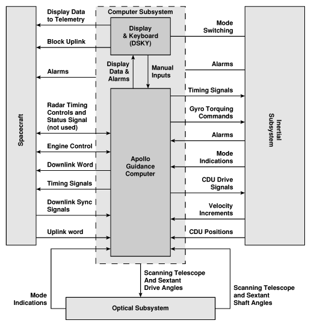
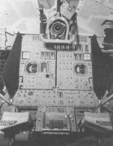
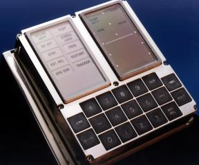
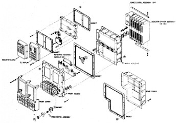
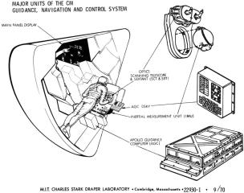
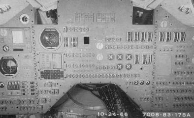
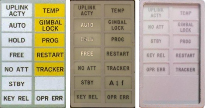
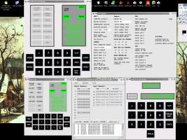

Contents
|
|
What
is
a DSKY?
The DSKY is the "display/keyboard" (DSKY) used by the Apollo
Guidance Computer (AGC). The DSKY provided only a
means to input keyboard data to the AGC, or to display
visual information at command of the AGC, and therefore had
little or no functionality of its own, when considered as a
stand-alone device.
The DSKY may seem somewhat familiar from, for example,
the movie Apollo 13.
In the HBO mini-series, From
the
Earth to the Moon, the DSKY appears so prominently
that it almost becomes another character (dramatically
speaking). For those of us who are familiar with it from
these sources, it is easy to think of the DSKY itself as
being the computer. However, the DSKY really was quite
independent from the AGC. From the computer's
standpoint, the DSKY was just another few i/o channels, more
or less, as in the block diagram below. |
|
or
The Lunar Module had a single
DSKY, at the bottom center of the control panel. The
Command Module had
two
DSKY units: one in the main control panel near the commander;
the other at the navigator's station.

One thing you may wonder about if you looked
at the pictures above in a particularly scrutinizing fashion
is this: Why, in the half-dozen or so pictures of the
DSKY above, are there four or five different collections of
words displayed on the upper-left panel of the DSKY?
Or perhaps you didn't even notice, since people are so used
to graphical displays that simply show whatever the software
requires ... so what difference does it make
what
they display? Except that the DSKY didn't have a
graphical display. Its design long preceded the notion
of a useful graphical display. The words shown on the
DSKY's front panel were actually engraved on there.
They couldn't just change at will!
Perhaps the point still isn't clear even after
that explanation, so look at the image to the left, which
I've extracted DSKY annunciator-lamp arrangements from the
various images above. The two leftmost arrangements of
annunciator lamps were actually never flown at all ...
although if you squint
very closely at the October
1966 photo of a Command Module control panel above, you'll
see that the leftmost arrangement of annunciator lamps does
seem to have been used in its DSKY. With that said,
the rightmost arrangement was invariably used in the flown
Command Modules, and was used in the Lunar Module up through
Apollo 10, while beginning with Apollo 11 a different
arrangement (not depicted) began to be used in the Lunar
Module. By the way, I once asked Eldon Hall what the
leftmost arrangement was actually used for, since it was
never flown, but nevertheless still appears quite often in
print articles? He simply said that the faces were
modular, and thus interchangeable, leaving me the impression
he thought I was an idiot. (But I think the question
is still valid.

)
In fact, what this illustrates is that "the DSKY" is not
just one thing, but rather a sequence of stages of a design
process. Occasionally, people take me to task for
ignoring such details, not to mention other specifics like
the exact dimensions of the DSKY, the exact colors of the
faceplate or the indicator lamps, and so forth, simply
because such details were not available when I began the
project of simulating the AGC and DSKY in software.
Fair enough, though I'm going to basically continue ignoring
such details below. Before I revert to doing that,
though, I'd like to point out that we
now have quite
a collection of the original engineering drawings that
define the DSKY design, so many of these questions can be
answered by the engineering drawings rather than requiring a
trip to the Smithsonian with calipers and whatever device is
used to measure color. In fact, here are links to the
engineering drawings for all Block II DSKYs flown on
missions:
Which still leaves my question to Eldon Hall unanswered,
about where the leftmost arrangement of indicator lamps
was used? I should leave that as an exercise for the
reader, but I'll take pity and just give you the
answer: If you are persistent in working through the
engineering drawings, you find this arrangement in the
DSKY for the very earliest
Block II G&N (Guidance & Navigation) system,
which was designated G&N system #201, and
specifically in drawing
1006316, entitled "INDICATOR, ALARM,
SPECIFICATION CONTROL DRAWING". This drawing (and
others like it for other variations of the G&N system)
are also full of other details of interest to those
concerned about authenticity of physical appearances, such
as that the indicator lamps shall be "aviation white" and
"aviation yellow" per mil-spec
MIL-C-25050. One interesting factoid asserted
by the drawing is that the lettering shall be 0.156" high
black Gorton Condensed. Other versions of the DSKY
instead call out Gorton Normal. You may suppose from
this that "Gorton" was some generally recognized
font. It was not. Gorton was in fact the name
of a manufacturer of engraving machines. However, Gene Dorr
(who is actually the one who researched these matters)
has gone ahead and created an actual Gorton font,
which could be of use to anyone trying to create their
own, far more authentic-looking version of a DSKY than I
have!
As for G&N system #201, I suppose that it was simply
such an early version that the specific indicator lamps
needed hadn't been set in stone yet, but that once the
media had an attractive graphic it simply ended up being
reproduced in print articles. As far as the middle
arrangement shown above, I find no record of it in any of
the engineering drawings I've seen.
What is yaDSKY?
yaDSKY is a computer
program which emulates the DSKY. yaDSKY has now been superceded by yaDSKY2, though both programs
are still available, and with only minor differences are
interchangeable. So in speaking of "yaDSKY" I am really
speaking of either program unless I explicitly state otherwise.
The DSKY had little or no functionality of its own, when considered
as a stand-alone device. The same is true of the yaDSKY emulation of the
DSKY. It requires the yaAGC
program (which simulates the AGC) to be useful. Just as
the true AGC and DSKY communicated between themselves by means of
wiring, the virtual yaAGC
and yaDSKY communicate
between themselves using communication channels (sockets) that act
like virtual wires. In other words, yaDSKY merely communicates
keypresses to yaAGC, and
receives communications from the yaAGC
about which lights to activate.
If you don't like my yaDSKY,
or if you want to integrate yaAGC
into a larger simulation project, or if you want something that
works on a platform I don't support, you can replace yaDSKY with a program more to
your liking. The method for doing so is described in detail on the developer-info page. In fact,
Stephan Hotto has done just that (among other things) with the LM_Simulator
software he has contributed to this project. At the right is a
very cute screenshot (click to enlarge) of yaDSKY and Stephan's "DSKY LITE"
running side-by-side and communicating with the same instance of yaAGC.
Running yaDSKY
The yaDSKY2 program is
invoked as:
yaDSKY2 [OPTIONS]
while yaDSKY is invoked as
yaDSKY [OPTIONS]
or
yadsky [OPTIONS]
The available options are as follows:
--help
Display a list of options,
something like the information shown here.
--ip=addr
yaDSKY
and yaAGC are a
client/server pair, and can be running on the same computer or on
different computers. In order to connect to the yaAGC server, yaDSKY has to know the
IP-address of the machine on which yaAGC is running. By default this is
"localhost"—i.e., the two are running on the same computer.
However, a different IP address may be specified using this
command-line switch. In Linux, this may be either the machine's
name, or else a numerical address in dotted format (n.n.n.n).
MS-Windows—at least Windows 98—is somewhat crippled in this
respect, and will only accept a host name rather than a numerical
IP address.
--port=port
Similarly (see above), in addition
to an IP address, a port number is needed. This must be in the
range of port numbers
yaAGC
is scanning (which by default is 19697-19706). If no port is
specified,
yaDSKY will
use 19697 (since the Apollo 11 mission was in July 1969). A
simulation of the Command Module would require
two DSKY units, one for the
contral panel and one for the navigator's station; so two copies
of
yaDSKY would be run,
and would have to be assigned different ports (such as 19697 and
19698). The
developer page
contains
suggested port
assignments, including the suggestion that Colossus should use the
range 19697-19706 while Luminary should use the range 19797-19806.
--cfg=ConfigFilename
This switch configures the DSKY for
different Apollo missions or for CM vs. LM operation. Among
the things that differ in different configurations are the legends
that appear on the 14 indicator lights on the upper-left side of
the DSKY panel, and the labeling on the PRO key. The DSKY is
reconfigured through the use of configuration files, of which the
ones that exist as of this writing are CM0.ini, CM.ini, LM.ini,
and LM1.ini. (A description of the differences appears
later.) If no "--cfg" switch is present, default values are
used which are the same as those in the distribution version of
LM.ini, but the LM.ini file itself is not used unless specified by
the presence of "--cfg=LM.ini". Refer to the
developer page for information on
modifying the legend sets or adding new sets. If a complete
pathname for
ConfigFilename
is not specified, then
yaDSKY
will look first in the current directory, and then (for software
versions 05/06/2004 or later) in the installation directory (which
is /usr/local/bin by default, but which may be changed at
build-time).
(Only versions 20040811 and
after.) yaDSKY's
graphical interface is simply too big for PC's with lower
graphical resolution (smaller than 1024×768). If the
--half-size switch is used, half-size graphics are used, and so
the interface should be usable even down to 640×480
resolutions. The smaller interface doesn't really look very
good, because it is simply blindly scaled down from the larger
interface, rather than being optimized, but at least it's usable
at 800×600 and 640×480 resolutions. If both the --half-size
and --cfg switches are used, the --half-size switch must be to the
left of the --cfg switch on the command line.
--delay=Milliseconds
(Versions 20040821 and
after.) Adds a delay at start-up, so that
yaDSKY does not immediately
begin attempting to communicate with
yaAGC. The current defaults are 0 ms. in
Linux and 500 ms. in Win32. This "feature" has been added as
a temporary work-around for
problem report
#23, and probably has no other sensible purpose. Even on
Win32 it isn't usually needed, but it's here for the 10% (or
whatever) of the time it's needed.
--debug-counter-mode
(Versions 20050515 and
after.) This is present only for debugging the AGC's
"unprogrammed" counter-increments, and has no useful purpose
otherwise. In this mode, the keys of the simulated DSKY—or
at least, the VERB, NOUN, 0-7, and PRO keys—do not have their
normal interpretations and cannot be used to affect the AGC CPU in
any normal way. Instead, the combination NOUN-
digit-
digit is used to specify an
(octal) CPU counter-register number, and the combination VERB-
digit is used to select a
counter-increment type as defined on the
developer page. The PRO
key is used to send the selected counter-increment command to the
AGC, to increment/decrement the counter-register. Note that
there are no visual displays associated with this, since the AGC
is still commanding the DSKY visual display in its usual way, so
you just have to mentally keep track of what counter-register and
which unprogrammed-increment command you've chosen. This
mode is terminated only by restarting
yaDSKY. Only counter registers in the range
32-60 (octal, default 32) are accepted, and only increment-types
in the range 0-6 (default 1) are accepted. Any time the PRO
key is pressed with settings outside this range, no action
occurs. The only useful way to use this is to make sure that
yaAGC has been run in
debug mode, and to use the
yaAGC
debugger's "dump" command to check the results of the various
increment/decrement commands. For example, if the default
settings aren't changed, the command "dump 32" will initially show
00000, but will show "00001" after the PRO key has been hit once,
"00002" after the PRO key has been hit twice, and so on.
--test-uplink
(Versions 20050626 and
after.) In this mode, keystrokes are communicated to yaAGC via the digital uplink
rather than via the normal CPU input channel 015, but this is
relatively transparent to the user, other than the fact that the
UPLINK ACTY indicator lights up. Normally this facility
would have been used by the ground-station for uplinking
data. However, since the uplink consists of encoded DSKY
keycodes, "--test-uplink" provides a convenient method of testing
this facility without having to write a whole new program.
I've noted that when using this mode, the keystrokes seem to work
properly, but updating the DSKY display is very
hit-and-miss. I assume this is a normal property of the
uplink—rather than a bug in yaAGC—but
I
don't really know.
--test-downlink
(
yaDSKY
versions 20050628 and after. Not available in
yaDSKY2, but equivalent
functionality is provided instead by the
separate yaTelemetry program.) In this mode,
yaDSKY provides the additional
function of displaying telemetry-downlink lists as they are
emitted from the AGC, in a manner similar to the
yaTelemetry program. To
use this mode effectively,
yaDSKY
should be run from a terminal window which is at least 80
text-columns wide, and at least 36 text-rows high; otherwise, a
complete downlink list will not fit on-screen and portions will
scroll off the top of the screen. Furthermore, an ANSI
terminal will provide the most effective (and attractive) display,
since some ANSI escape-sequences are used for cursor
positioning. In Linux this should be no problem. In
Windows, it is generally necessary to install ANSI.SYS in order
for the command-line interface to accept ANSI commands. I
must admit, though, that in experimenting with Windows XP I have
been unable to get ANSI.SYS to install. (If somebody wants
to send me the magic formula for this, I'd appreciate it.)
--relative-pixmaps
(Final yaDSKY version only. Not available in yaDSKY2.) Alters the
locations of the files containing graphics files used by the yaDSKY program to locations
more congenial to use in VirtualAGC
GUI based installations as opposed to installation in system
directories (the default). The new locations used are the
./pixmaps/yaDSKY/ directory.
yaDSKY and yaAGC attempt to be insensitive
to each other's absence, but I'd recommend running yaAGC first and yaDSKY second, particularly in
Win32.
Features for
Presentations, Interactive Demos, etc.
Other than the techniques discussed in this section, it may be
possible to use the digital
uplink
facility to automate various activities.
Canned,
Pre-recorded Mission Segments
(This section is applicable to software versions 2017-12-11 or
later.)
It is possible to record (or otherwise create) a script of AGC
i/o-channel operations controlling the DSKY, and to conveniently
play back such canned scripts later. At present, there are
two ways of obtaining such canned scripts:
- "Record" them using yaDSKY2 (or piDSKY2.py).
The
recording process is described below.
- Obtain a log of i/o-channel activity from a NASSP simulation,
and convert that log to DSKY format using the program convertNasspLog.py.
The
ability for NASSP to log this data is new, and presumably
neither documented nor widely available, so the details are TBD.
In playback, yaDSKY2 basically disregards any new
output-channel commands originating from the AGC in real time,
working only from the script it is playing back. When the
script has completed or perhaps has been prematurely terminated by
the user, it restores the DSKY's numerical displays and indicator
lamps to the configuration they had prior to starting the
playback, and resumes listening to the AGC for new commands.
Usually the AGC commands that were ignored during script-playback
will have been buffered and will all be processed instantly, so
that the DSKY will quickly assume the appearance it would have had
if it had been responding to the AGC's commands all along.
At the moment I'm writing this, we have the following
pre-recorded scripts, each taking 15-16 minutes to run:
- An Apollo 8 launch sequence.
- An Apollo 11 launch sequence.
- An Apollo 11 lunar landing sequence. Note that since
this is a recording of a simulated landing, and not a recording
from the actual Apollo 11 landing, you shouldn't imagine that
events (like 12xx alarms) necessarily happen at the same
times or in the same ways.
To select a script to play back, click the yaDSKY2's PROG
indicator lamp with the mouse. Of course, in a real DSKY,
the PROG indicator and all other indicators are simply lamps, and
not buttons, and it's only the simulated DSKY in which some
indicators have been subverted to have button-like
properties. At any rate, doing so opens up a file-dialog
that allows you to select the canned script to be played
back. Usually these will be in the directory the file dialog
shows by default, though if you have created canned scripts of
your own, they will be located elsewhere and you'll have to use
the file dialog to navigate to them. The files have the
extension ".canned".
Scripts will generally execute all the way to their ends,
displaying a pop-up information box when complete, but you can
also prematurely terminate a script by once again clicking PROG
whilst the script is running.
A script is simply a text file, and therefore can in theory be
created by some other method than the ones I will proceed to
describe below. The format is very simple; each line simply
has three fields,
DifferentialTimeInMilliseconds
AgcOutputChannelNumberInOctal AgcOutputChannelValueInOctal
The differential time (usually an integer, but can be floating-point
decimal) is simply the time in milliseconds since the preceding line
of the file. (NASSP i/o-channel logs have the same format,
except that the initial field is the absolute simulation time, in
seconds.) DSKYs are always controlled by AGC "output channels"
010, 011, 013, and 0163 as described on our
developer
page; for informational purposes, input channels that
record keystrokes (outputs from the DSKY) are generally included as
well.
To record a file from yaDSKY2 (or piDSKY2.py) for later
playback, you'd do this:
- Using yaDSKY2. Left-click the TRACKER indicator
lamp with the mouse to start recording, and then click it again
to finish the recording. On Linux, the output file,
"yaDSKY2-recorded.canned" goes into the home directory.
I'm not sure where it goes on Windows or Mac (perhaps the
Documents directory).
- Using the Python 3 language DSKY simulation, piDSKY2.py, with
its --record command-line switch, everything is simply recorded
without additional user interaction, and the recording continues
until piDSKY2.py is terminated. The output file,
"piDSKY2-recorded.canned" goes onto the (Raspberry Pi) Desktop.
Finally, it is sometimes useful to analyze these i/o-channel
script in order to understand or document what they're
doing. There's a program called humanizeScript.py
that produces a relatively human-friendly report from a playback
script.
"Special Effects"
If you should find yourself in the position to give a presentation
on the AGC, the lunar landings, Apollo, etc., using Virtual AGC,
versions of the yaDSKY2
program 20090613 and later have a "special effects" facility build
into it which might be useful to give your presentation a little
more sizzle. Conceivably, this facility could also be used in
setting up an interactive AGC demo, AGC self-study materials,
etc. What the facility allows you to do is to map selected
sequences of DSKY keystrokes to commands which will be executed on
the computer running the simulation. The only real
restrictions are that the key-sequences used must begin with the
VERB key and cannot contain a second VERB key in the sequence; also,
at most 100 keypad-to-command mappings can be defined.
This keystroke-to-command mapping is independent of the processing
done by the AGC. In other words, if a certain keystroke
pattern is configured to execute a certain command on the simulating
computer, it will still
cause the AGC to perform whatever action the AGC would normally
perform given those keystrokes.
In order to configure yaDSKY2
to do this, you need to create a file called "DSKY2.matches" in the
Resources/ subfolder of the installation folder. (We discuss
this elsewhere, but for default installations that folder is
"~/VirtualAGC/Resources/" in Linux, "c:\program files\virtual
agc\resources" in Windows, and
"~/Desktop/VirtualAGC.app/Contents/Resources/" in Mac OS X.)
This ASCII file is simply a sequence of lines which begin with the
keystroke pattern being matched, followed by a space, followed by
the command which is supposed to be executed. The command can
have spaces or pathnames in it. The patterns are created from
the characters VN+-0123456789CPKER (capitalization is important!),
which correspond to the DSKY keys in an obvious way (see the
following section). The pattern must begin with V and contain
no more than one V, since the match buffer is cleared whenever the
VERB key is pressed. You can also use the special pattern
"startup", in which the associated command is executed when yaDSKY2 starts up rather than
having to be activated by any particular sequence of keystrokes.
Basically, anything which can be controlled from the computer's
command-line can be controlled by a DSKY key sequence in this
way. What these things are depends on the operating
system, the peripherals installed on your computer, and the ease of
controlling those peripherals from command-lines (as opposed to GUI
controls)—not to mention your own creativity and computer skills—so
I won't bother with listing any specific commands you might
use. But in a general way, you might:
- Initiate playback of audio clips.
- Initiate playing of a CD or DVD.
- Cause a text window to pop up.
- etc.
For example, suppose that your PC was configured so that it could
control an X10 automation system which could (among other things)
turn off the room lights by executing the command-line command
"LightsOff.bat", and that to begin your presentation you wanted to
turn off the room lights and start a short introductory video; later
in the presentation you want to manually demonstrate some AGC
operations, and you want to trigger some special action when
performing a "goto pooh" operation ("V37E00E"). As
mentioned, the V37E00E command is still processed properly by the
AGC and still causes program P00 to start. For this example,
your DSKY2.matches file might look like this:
startup LightsOff.bat
startup PlayIntroVideo.bat
V37E00E GotoPoohAction.bat
This example assumes that you are running Windows (since that's the
only place that a ".bat" file is used; on other supported platforms,
the equivalent concept would be a "shell script"). You provide
the batch files yourself, and yaDSKY2
has no understanding at all of what they represent, other than that
it is supposed to execute them. This example needs only a
single keystroke mapping, but if there were additional keystroke
mappings, you would simply add more lines to the file. Also,
while we illustrate this with batch files (shell scripts), the
commands could just as easily be executable programs with
command-line parameters as well.
It's very important to understand that yaDSKY2 has no means of locating the commands
referenced by DSKY2.matches other than the the local rules (such as
the PATH environment variable) used by your system.
Furthermore, the setting of PATH isn't necessarily the same when you
are running VirtualAGC by
clicking its desktop icon than it is when you are testing out batch
files or shell scripts from a command line. Therefore, it may
be best to specify the full pathnames of the commands being used
rather than just the simple filenames as shown in the example
above. Personally, I place these command files in the same
folder as DSKY2.matches itself, and specify the names as "./filename" or ".\filename".
In the future, this facility could be extended in various ways, such
as triggering commands based on the DSKY indicator lamps becoming
active, numerical patterns appearing in the DSKY display registers,
adding commands for initiating digital uplinks, etc. However,
it is unlikely that any of these capabilities will be implemented
unless there are explicit requests for them, so contact me directly
if you have a need for some or all of them.
The Different Parts of
the DSKY
It's important to understand that the various keys and displays of
the DSKY have no intrinsic interpretations of their own. The
interpretations of the keys and displays are entirely dictated by
the software running on the AGC; with different AGC software,
different interpretations might apply. Fortunately, though,
the software was fairly consistent in this regard, and the typical
meanings of the keys and displays are summarized below.
The Keys
Key
|
Description
|
0-9, +, -
|
Self-explanatory, I think.
|
VERB, NOUN, ENTR
|
"Verbs" and "nouns" were
used by the astronaut to supply commands to the AGC. First
a verb would be entered, then a noun. (For example, verb
37 would indicate that the astronaut desired the AGC to
run a particular sub-program. The noun would be the
requested sub-program number.) In general, the sequence of
steps for keying in a noun/verb pair was: VERB, digit,
digit, NOUN, digit, digit, ENTR.
|
CLR
|
Clears the current data
display. Pressing CLR twice clears two data
displays. |
KEY
REL
|
This key was pressed by the
astronaut to "release" the DSKY. In other words, to tell
the AGC that he was done with what he was doing and that
the AGC could begin displaying other data on the DSKY, if
it desired to do so.
|
PRO
or PROG or STBY
|
Toggles "standby" mode on
or off. In other words, if in normal operating mode
proceeds to standby mode, but if in standby mode proceeds
to normal operating mode. |
RSET
|
Resets (turns off) the
indicator lamps.
|
In
yaDSKY, you use the
mouse to click the various buttons on the keypad. For
yaDSKY versions 2005-09-20
and later—but
not in
yaDSKY2—thanks to Christian Bucher you can also use the PC's
keys
0 1 2 3 4 5 6 7 8 9 + - v n e
(DSKY keys CLR, KEY REL, PRO, and RSET have no accelerator keys
on the PC's keyboard.) For
yaDSKY2, alas! these hotkeys presently work only
in Mac OS X, and don't work either in Linux or Windows.
The Displays
Display
|
Description
|
COMP
ACTY
|
This lit up when the computer
was busy.
|
PROG
|
The PROG lamp was normally
lit. The two-digit display underneath it showed the program
number that was currently running. The Luminary and Colossus programs each
provided up to 100 sub-programs for various purposes. The
sub-programs were numbered 00, 01, ..., 99.
|
VERB
|
The VERB lamp was normally
lit, but flashed when the astronaut was supposed to key in a
new verb number. The last verb keyed, or the verb currently
being keyed, was shown on the two-digit display beneath the
VERB lamp.
|
NOUN
|
Same idea as the VERB
display, but for nouns instead.
|
Register 1, 2, and 3
|
Three 5-digit displays (plus
sign) showed data that was dependent on the particular
sub-program being run at the time. The numbers were decimal
if the plus or minus sign was lit, but were in octal format
otherwise.
|
The Warning or Indicator
Lamps
The DSKY panel had space for up to 14 warning lights in the
upper-left quadrant of its panel. The trick is determining the
textual legends for the indicators, and the colors of those
indicators, on a mission by mission basis. The data for doing
so comes from the engineering
drawings for the DSKY, which can be summarized as follows:
Among other things, the ALARM INDICATOR drawings imply the
colorings:
- Energized yellow: "aviation yellow" per MIL-C-25050
- Energized white: "aviation white" per MIL-C-25050
- Unenergized: ... inquiring minds would read the ALARM
INDICATOR drawings ...
The drawings also say that the following physical arrangements of
text&color apply:
CM, all
Block II missions
LM, Apollo 5,9-10
(CM.ini)
|
UPLINK ACTY
|
TEMP
|
NO ATT
|
GIMBAL LOCK
|
STBY
|
PROG
|
KEY REL
|
RESTART
|
OPR ERR
|
TRACKER
|
|
|
LM,
Apollo 11-17
(LM.ini)
|
UPLINK ACTY
|
TEMP
|
NO ATT
|
GIMBAL LOCK
|
STBY
|
PROG
|
KEY REL
|
RESTART
|
OPR ERR
|
TRACKER
|
|
ALT
|
|
VEL
|
|
Legend
|
CM
|
LM
|
LM1
|
CM0
|
Description
|
UPLINK ACTY
|
×
|
× |
× |
× |
Lit whan data was being
received from the ground
|
TEMP
|
× |
× |
× |
× |
Lit when the temperature
of the stable platform containing the sensors for the
inertial measurement unit (IMU) was out of tolerance.
|
NO ATT
|
× |
× |
× |
× |
Lit when the inertial
subsystem could not provide attitude reference.
|
GIMBAL LOCK
|
× |
× |
× |
× |
Lit when the middle gimbal
angle (for the IMU stable platform) was greater than 70
degrees.
|
STBY
|
× |
× |
× |
× |
Lit when the computer
system was in standby.
|
PROG
|
× |
× |
× |
× |
Lit when the computer was
waiting for operator input.
|
KEY
REL
|
× |
× |
× |
× |
Lit when the computer
wanted to display some information on the DSKY, but was
locked out from doing so because the crew were using the
DSKY. The astronaut was supposed to press the KEY REL key
when this light came on, to indicate that he was done with
the DSKY.
|
RESTART
|
× |
× |
× |
× |
Lit while the computer was
restarting.
|
OPR
ERR
|
× |
× |
× |
× |
Lit to indicate a
data-entry error by the crew.
|
TRACKER
|
× |
× |
× |
× |
Lit when one of the
optical coupling units failed.
|
NO DAP
|
|
|
× |
|
Lit upon failure of the
digital autopilot (DAP). Note that while you can find
DSKY images with this indicator in a lower left-hand
position, it doesn't appear in any of the mission DSKYs.
|
PRIO
DISP
|
|
|
× |
|
A "priority display" is
exactly what it sounds like: data which is more urgent
than the data currently being displayed on the DSKY, usually
for critical alarm conditions. Though I'm not sure
what happens when a priority display is needed, it's
probably something like this: The priority-display
data automatically replaces what's currently being
displayed, and the PRIO DISP lamp illuminates. When
the astronaut eventually dismisses the priority display, the
original data display returns, and the PRIO DISP lamp goes
off. If more than one priority display wants attention
at the same time, it causes a program alarm 31502.
Note that while you can find DSKY images with this indicator
in a lower left-hand position, it doesn't appear in any of
the mission DSKYs. |
ALT
|
|
× |
× |
|
Lit when the altitude was
out of range.
|
VEL
|
|
× |
× |
|
Lit when the velocity was
out of range.
|
AUTO
|
|
|
|
× |
TBD
|
HOLD
|
|
|
|
× |
TBD
|
FREE
|
|
|
|
× |
TBD
|
This page is available under the Creative
Commons
No Rights Reserved License
Last modified by Ronald Burkey on
2019-09-16.

{kind=link}
{kind=link}
{kind=link}
{kind=link}
{kind=link}
{kind=link}
{kind=link}